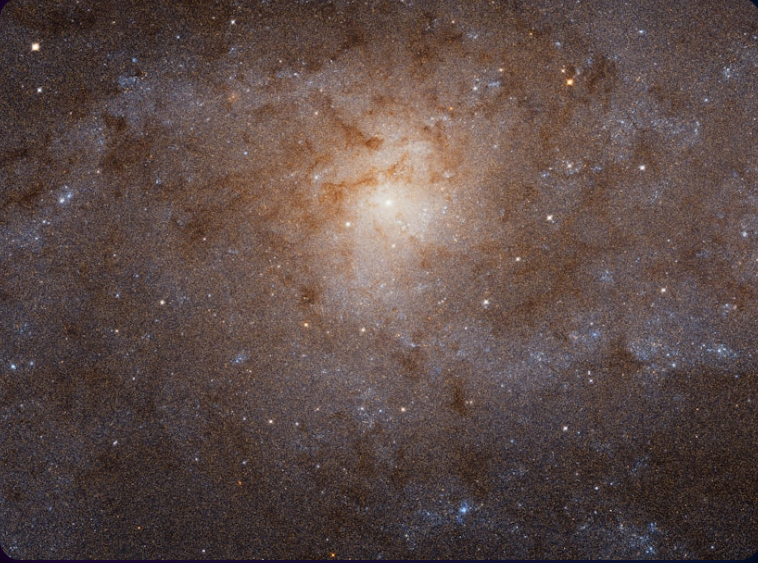
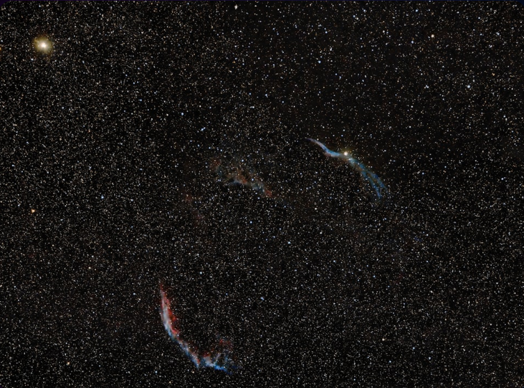
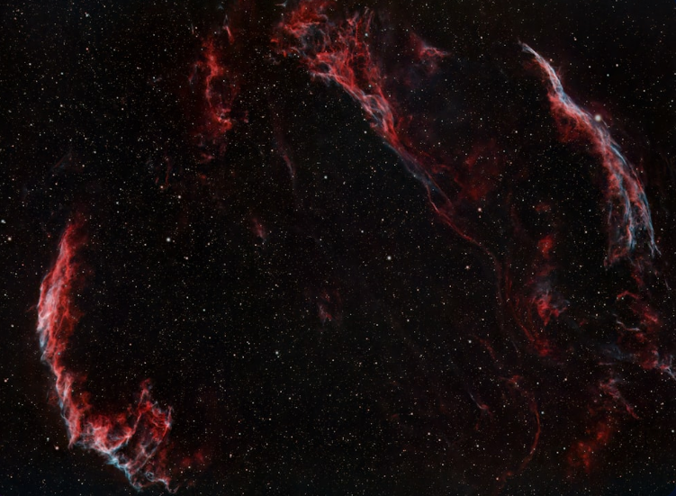
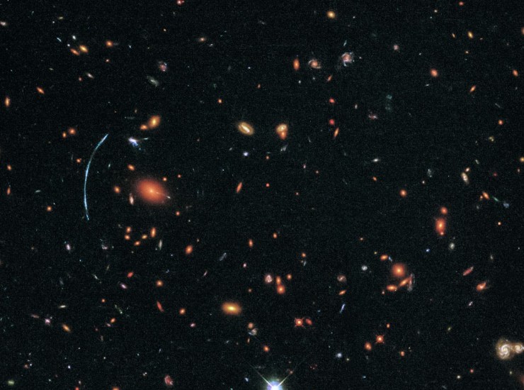

DEEP SPACE
Journey Beyond Our Solar System Into the Infinite Cosmos
Explore the mysteries of galaxies, black holes, nebulae, and cosmic phenomena that
exist
in
the vast expanse beyond our cosmic neighborhood
The Vast Unknown
Deep space represents everything beyond our solar system—a realm of unimaginable scale where
distances are measured in light-years, time dilates near massive objects, and the laws of physics are
pushed to their extremes. Here, we find the building blocks of creation and the remnants of cosmic
destruction, painting a picture of a universe both beautiful and violent.

Cosmic phenomena

Galaxies
Massive cosmic islands containing billions or even trillions of stars, along
with
gas, dust, and dark matter, all bound together by gravity. Galaxies are
the fundamental
building
blocks of the universe.
key insight
Our Milky Way galaxy contains 200-400 billion stars
- There are an estimated 2 trillion galaxies in the observable universe
- Galaxies come in three main types: spiral, elliptical, and irregular
- The Andromeda Galaxy is the nearest major galaxy to the Milky Way, 2.5 million light-years away
- Galaxies collide and merge over billions of years
Black Holes
Regions of spacetime where gravity is so intense that nothing, not even
light,
can
escape once it crosses the event horizon. They represent the most
extreme environments in the
universe.
key insight
Supermassive black holes can be billions of times the mass of our Sun
- The first image of a black hole was captured in 2019 in galaxy M87
- Time slows down near a black hole due to extreme gravity
- Stellar black holes form when massive stars collapse
- Most galaxies have a supermassive black hole at their center


Nebulae
Vast clouds of gas and dust in space, serving as stellar nurseries where new
stars are born. These cosmic clouds create some of the most stunning and
colorful objects
visible in deep space.
key insight
The Eagle Nebula's 'Pillars of Creation' spans about 4-5 light-years
- Nebulae can be emission, reflection, or dark nebulae
- The Orion Nebula is visible to the naked eye and only 1,344 light-years away
- Planetary nebulae are created when dying stars expel their outer layers
- Nebulae contain the raw materials for planet formation
Supernovae
The explosive death of a massive star, releasing more energy in a few weeks
than
our Sun will emit in its entire 10-billion-year lifetime. These cosmic
explosions seed the
universe
with heavy elements.
key insight
A supernova can briefly outshine an entire galaxy
- Type Ia supernovae are used as 'standard candles' to measure cosmic distances
- Supernovae create and disperse elements like iron, gold, and uranium
- The last nearby supernova visible to the naked eye was in 1604
- Neutron stars and black holes are remnants of supernovae


Star Clusters
Groups of stars that formed together from the same molecular cloud and
remain
gravitationally bound. They provide astronomers with valuable
insights into stellar evolution
and the age of the universe..
key insight
Globular clusters can contain hundreds of thousands of stars
- Open clusters are younger and contain dozens to thousands of stars
- Globular clusters are ancient, often over 10 billion years old
- The Pleiades is one of the most famous open clusters, visible from Earth
- Star clusters help scientists understand how stars of different masses evolve
Quasars
The most luminous and energetic objects in the universe, powered by
supermassive black holes consuming matter at the centers of distant
galaxies. They shine across
billions of light-years of space.
key insight
Quasars can be 100 times brighter than our entire galaxy
- The term 'quasar' stands for 'quasi-stellar radio source'
- Most quasars existed billions of years ago in the early universe
- They emit jets of particles at nearly the speed of light
- Quasars help us study the early universe and dark matter

Observing Deep Space
Modern telescopes, both ground-based and space-borne, allow us to
peer billions of
light-years into the cosmos. The James Webb Space
Telescope, Hubble Space Telescope, and massive
ground observatories
reveal the universe's secrets in unprecedented detail.
- Space Telescopes
- Radio Astronomy
- Spectroscopy

"
The cosmos is within us. We are made of star-stuff. We are a way for the
universe to
know itself.
— Carl Sagan